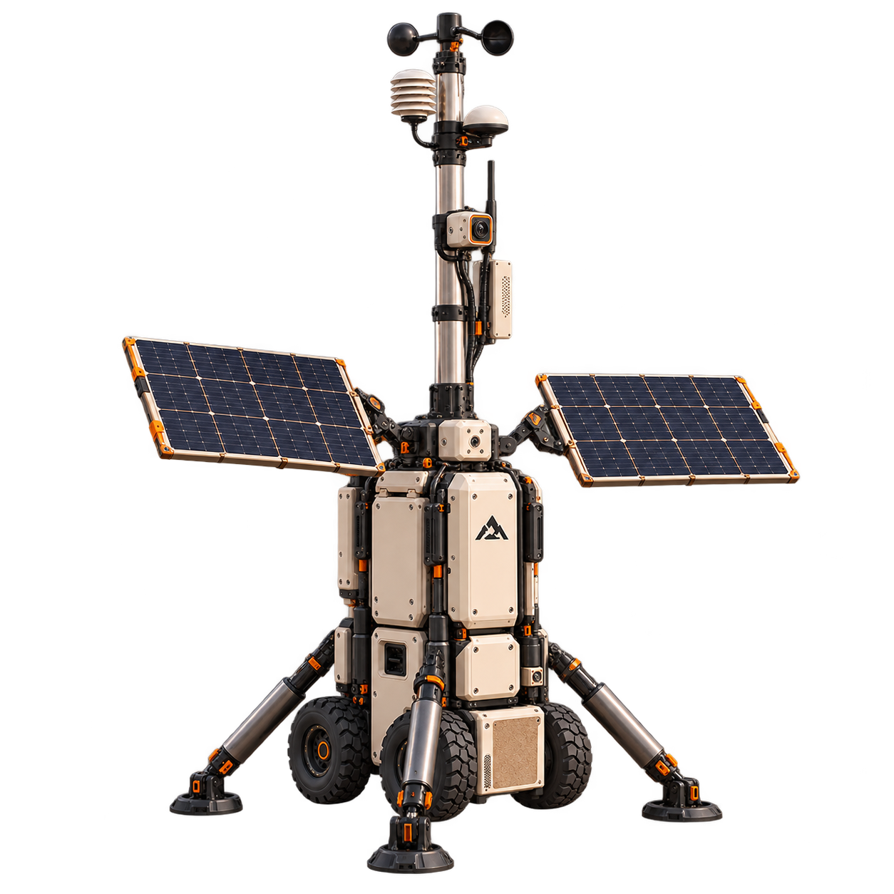

01 / WIND
How the air moves.
8.4 m/s↗ 045°
Local speed and direction provide the starting point for mapping wind across a settlement.
SPEED + DIRECTION m/s · °
FIELD HARDWARE / SENSOR CONCEPT 01
Meet the eyes and ears of MarsWindNet.
A deployable sensor concept that turns local conditions into a picture of the world around us.

CONCEPT VISUALISATION
From the ground.
For the bigger picture.
Measure conditions at the station.
Share time-stamped observations.
Bring local readings into the network.
01 / MEET THE HARDWARE
Turn it around. Unfold it. Get to know
the station, one component at a time.
EXPLORE THE ASSEMBLY
An elevated sensor head would measure local wind speed and direction. Its position helps separate the measurement from disturbances around the base.
A simplified 3D interpretation of the concept renders. Geometry and deployment are illustrative.
02 / THE DATA LAYER
Proposed sensing capabilities.
Readings below are illustrative examples.
Local speed and direction provide the starting point for mapping wind across a settlement.
A shielded weather pod would capture temperature, pressure and humidity near the station.
A particle sensor could track local dust concentration and size distribution with suitable calibration.
Camera imagery and station health add context. Hardware selection, measurement ranges and Martian calibration remain to be validated.
03 / FROM COMPACT TO CONNECTED
A mobile form for moving between sites. A raised mast and wide stance for observing from one.
Try the deployment in 3D ↗A wider footprint. An elevated point of view.
04 / THE MARSWINDNET CONNECTION
Capture local environmental observations.
Attach a station ID, location, timestamp and quality flag.
Send observations to a shared network when connected.
Compare stations and explore the wider wind field.
This is the proposed hardware side of MarsWindNet. The current web prototype explores virtual stations; this page is not connected to physical sensor telemetry.
THE DESIGN, IN DETAIL